lo, hi = sel["KGE_95CI"]; nlo, nhi = sel["NSE_95CI"]best_single = sel["best_single_model_id"]spread_all =max(K(c) for c in CAND) -min(K(c) for c in CAND)Markdown(f"""**Winner: `{WIN}` — KGE {f(sel['KGE'])} (95 % CI {f(lo,3)} … {f(hi,3)}),NSE {f(sel['NSE'])} (95 % CI {f(nlo,3)} … {f(nhi,3)})** on the evaluation metric window**1949-01-01 … 1951-09-30 ({sel['metric_days']} days)**, an equal-weight mean of all fivecalibrated slots.The margin is small and should not be oversold. `{sel['runner_up']}` has the *highest* KGE({f(sel['runner_up_KGE'])}), only {f(sel['top2_KGE_gap'])} above the winner, and the declaredtie-break (§ @sec-rule) — top-2 KGE gap < 0.02 **and** paired-bootstrapP(top > second) = {f(sel['P_topKGE_better_than_second_KGE'],3)} < 0.8 — moved the decision to NSE, where`{WIN}` leads by {f(sel['NSE'] - sel['runner_up_NSE'])}. A paired 30-day moving-block bootstrap givesP(`{WIN}` better than `{sel['runner_up']}` in KGE) = {f(pw.loc[sel['runner_up'], 'P_winner_better_KGE'],3)}— i.e. **a coin flip**. For scale: the 95 % CI of the winner's own KGE is{f(hi - lo,3)} wide, about {int(round((hi - lo) / sel['top2_KGE_gap']))}× the gap it won by, and the wholefield of ten candidates spans only {f(spread_all,3)} KGE units.The best **single** model on KGE is `{best_single}` ({f(sel['best_single_model_KGE'])}); the best singlemodel on **NSE** is `arx_api_ridge` ({f(N('arx_api_ridge'))}), which is also the highest NSE of anycandidate, ensembles included. The worst single model is the LSTM(KGE {f(K('lstm_seq2seq_fast'))}) — the model that had been the best on calibration.Pre-registered hypothesis **H1 is falsified in its first clause**: the 19-coefficient ARX-API ridgeregression does not sit at the bottom of the complexity gradient, it reachesNSE {f(hyp['H1']['NSE_slot1'])} against GR4J's {f(hyp['H1']['NSE_slot2'])} and SAC-SMA's{f(hyp['H1']['NSE_slot4'])}. Details and the other seven hypotheses in @sec-hypotheses.""")
Winner: ens_mean_all5 — KGE 0.9018 (95 % CI 0.811 … 0.944), NSE 0.8932 (95 % CI 0.856 … 0.950) on the evaluation metric window 1949-01-01 … 1951-09-30 (1003 days), an equal-weight mean of all five calibrated slots.
The margin is small and should not be oversold. ens_mean_conceptual has the highest KGE (0.9058), only 0.0040 above the winner, and the declared tie-break (§ Section 2.4) — top-2 KGE gap < 0.02 and paired-bootstrap P(top > second) = 0.339 < 0.8 — moved the decision to NSE, where ens_mean_all5 leads by 0.0294. A paired 30-day moving-block bootstrap gives P(ens_mean_all5 better than ens_mean_conceptual in KGE) = 0.661 — i.e. a coin flip. For scale: the 95 % CI of the winner’s own KGE is 0.133 wide, about 33× the gap it won by, and the whole field of ten candidates spans only 0.109 KGE units.
The best single model on KGE is gr4j (0.8941); the best single model on NSE is arx_api_ridge (0.9183), which is also the highest NSE of any candidate, ensembles included. The worst single model is the LSTM (KGE 0.7971) — the model that had been the best on calibration.
Pre-registered hypothesis H1 is falsified in its first clause: the 19-coefficient ARX-API ridge regression does not sit at the bottom of the complexity gradient, it reaches NSE 0.9183 against GR4J’s 0.8287 and SAC-SMA’s 0.8635. Details and the other seven hypotheses in Section 5.
Table 1: Windows actually used, read live from config/project.yaml (periods.definition = dates, ISSUE-001 resolved). Row indices are 0-based half-open positions in data/raw/LeafRiverDaily.txt.
Every model was run once, continuously, over the 1,095-day evaluation run window with its final calibrated parameters and its own parameter-derived initial states (a03 decision 3). The first 92 days (Oct–Dec 1948) are warm-up and enter no metric. There was no re-calibration, no parameter tweak and no model change after the evaluation observations were read; the pipeline (results/evaluation/run_evaluation.py) was executed once in its final form, and the two edits made to it before the final run (a wrong aux accessor for slot 4, a wrong runner_up field, and a corrected parameter count for slot 5) are bookkeeping, not scoring.
SAC-SMA (slot 4) runs with its cyclic warm-up spin-up active (ISSUE-005). On the evaluation window its 92 warm-up days were replayed 9 times (residual 0.00) using P and PET only, never observed Q, before the run window started. The calibration window needed 6 cycles. This is by design and was not disabled.
config/project.yaml → evaluation_protocol.final_report_metrics_only: true, so KGE and NSE are the only performance metrics in this report. The KGE components \(r\), \(\alpha\), \(\beta\) appear once, in Section 5, because hypothesis H5 is stated in terms of \(\alpha\) and \(\beta\) and cannot be adjudicated without them; they are not used to rank anything. Likewise the sub-period and log-space figures in H2/H3 are the pre-registered test statistics of those hypotheses, not performance claims.
2.3 Uncertainty
95 % confidence intervals come from a moving-block bootstrap(Künsch 1989; Politis and Romano 1994; Efron and Tibshirani 1994): 30-day blocks, 2,000 resamples, numpy.random.default_rng(42), block starts drawn uniformly from the 1,003-day metric window and concatenated to length 1,003. The same 2,000 index matrices are applied to every candidate, so differences between models are paired and their bootstrap distribution is a legitimate significance statement about the ranking. A 30-day block comfortably exceeds the basin’s 9–11 day recession time scale (a01/a02), so within-block serial correlation is preserved.
2.4 Selection rule (declared before the numbers were looked at)
Verbatim from .claude/skills/a16-evaluator/SKILL.md § Step 4:
Primary: highest KGE on the evaluation metric window.
If the top-2 KGE difference < 0.02 and paired-bootstrap P(top > second) < 0.8 → tie-break by highest NSE; if still tied, prefer fewer fitted quantities (parsimony).
Disqualify a model that produced NaN or negative flows — report it anyway.
Code
dq = sel["disqualified_nan_or_negative"]Markdown(f"**Applied:** {sel['rule_applied']}\n"f"**Rule 3:** {'no candidate produced a NaN or a negative flow'ifnot dq else'disqualified: '+', '.join(dq)} "f"(minimum simulated flow over all ten candidates: "f"{f(met.loc[CAND,'min_sim'].min(),4)} mm/d, at `{met.loc[CAND,'min_sim'].idxmin()}`).")
Applied: Rule 2 applied: top-2 KGE gap 0.0040 < 0.02 AND P(top>second | paired block bootstrap) = 0.339 < 0.8 -> tie-break on NSE. Rule 3: no candidate produced a NaN or a negative flow (minimum simulated flow over all ten candidates: 0.0222 mm/d, at sacsma).
2.5 Ensembles: where every weight came from
This is the single largest leakage risk in the study, so it is documented exhaustively. All five ensembles were built and frozen by results/evaluation/freeze_weights.pybeforerun_evaluation.py was ever executed, and the freeze was committed as git tag backup/a16-evaluator-20260916-171945. The script imports slice_run(df, "calibration") only; no evaluation row, observation or simulation enters results/evaluation/ensemble_weights.json.
Code
rows = []for eid, e in wts["ensembles"].items(): rows.append({"ensemble": eid,"members (slots)": " + ".join(str(m) for m in e["members"]),"weights": ", ".join(f"{w:.3f}"for w in e["weights"]),"weight source": e["weight_source"]})pd.DataFrame(rows).set_index("ensemble")
Table 2: The five pre-declared ensembles (config/models.yaml -> ensembles) with the rows their weights came from.
members (slots)
weights
weight source
ensemble
ens_mean_all5
1 + 2 + 3 + 4 + 5
0.200, 0.200, 0.200, 0.200, 0.200
pre-declared equal weights (config/models.yaml)
ens_mean_conceptual
2 + 3 + 4
0.333, 0.333, 0.333
pre-declared equal weights (config/models.yaml)
ens_physics_plus_ml
2 + 4 + 5
0.333, 0.333, 0.333
pre-declared equal weights (config/models.yaml)
ens_nnls_calibration
1 + 2 + 3 + 4 + 5
0.169, 0.000, 0.312, 0.000, 0.519
scipy.optimize.nnls on calibration_internal.va...
ens_best_conceptual_plus_lstm
4 + 5
0.500, 0.500
pre-declared 0.5/0.5; conceptual member = argm...
E1–E3 carry weights that were fixed a priori in config/models.yaml by a03 (equal weights); no data of any kind was used to set them.
E4 ens_nnls_calibration is the only ensemble with fitted weights. scipy.optimize.nnls(Lawson and Hanson 1995) was run on the member simulations over calibration_internal.validation 1981-10-01..1988-09-30 — raw file rows 12053:14610, 2557 days — the calibration internal-validation block prescribed by a04. Raw coefficients 0.1640, 0.0000, 0.3026, 0.0000, 0.5029 (slots 1…5) sum to 0.9695 and were rescaled to sum 1 as the specification requires. NNLS drove slots 2 and 4 to exactly zero: the fitted ensemble is 17 % ridge + 31 % HBV-light + 52 % LSTM. This is stacking in the sense of Breiman (1996) and it is the classical place where an ensemble over-fits its fitting window — see H6.
E5 ens_best_conceptual_plus_lstm needed a member choice. The specification says “argmax KGE over slots 2, 3, 4 on the calibration metric window”. Those KGEs are slot 2 0.9139, slot 3 0.9445, slot 4 0.9500 → slot 4 (SAC-SMA), chosen from calibration data alone.
2.6 Calibration reproducibility check
Before any evaluation simulation, each slot was re-run over the full calibration window with the parameters in results/calibration/<model_id>/best.json and compared with the optimizer’s own stored simulation and metrics.
Table 3: Step-1 precondition: every slot reproduces its stored calibration simulation and its stored KGE/NSE. Max |difference| is over the 13,515-day calibration run window.
algorithm / seed
max |Δ Q_sim| (mm/d)
KGE_cal reproduced
NSE_cal reproduced
slot
1 arx_api_ridge
optuna_tpe / 48
1.420000e-14
0.909769
0.820970
2 gr4j
sceua / 43
7.110000e-15
0.913858
0.855792
3 hbv_light
cmaes / 49
3.550000e-15
0.944521
0.893073
4 sacsma
sceua / 42
3.550000e-15
0.949961
0.901684
5 lstm_seq2seq_fast
a15b TPE / 42,43,44
3.550000e-15
0.925793
0.951018
All five agree with the stored values far inside the 1e-9 tolerance the skill demands (reproduced KGE and NSE are bit-identical to the ones in best.json at 10 decimals). Slot 5’s frozen artefact model_5_fast_ensemble.pt was restored with Model5().load(), which also restores a02’s frozen scaling constants; nothing was refitted and no scaling statistic was recomputed at predict time.
Two protocol notes, both decided before the evaluation numbers were seen:
Slot 1 is kind: trainable. The artefact handed over by the calibration phase fits the closed-form ridge coefficients on calibration_internal.train (1952-10-01…1981-09-30) and reports the resulting calibration-window scores; that is what best.json contains and what is used as the headline slot-1 model here. a03’s fit_protocol.final_refit prescribes an additional refit on the full calibration metric window; that variant was also evaluated and is reported as a sensitivity row only (arx_api_ridge_refit_metricwindow), never in the ranking.
Slot 5 uses a15b’s budgeted 3-seed ensemble. The full a15 run (pid 31743) had been executing for 6 h 49 min at evaluation time and had written no artefact; it was not waited for. a15b’s own handoff states its score is a lower bound for the LSTM slot.
3 Main results
Code
t = met.loc[CAND].copy()t["model"] = [LABEL[i] for i in t.index]t["KGE 95 % CI"] = [f"[{boot.loc[i,'KGE_lo']:.3f}, {boot.loc[i,'KGE_hi']:.3f}]"for i in t.index]t["NSE 95 % CI"] = [f"[{boot.loc[i,'NSE_lo']:.3f}, {boot.loc[i,'NSE_hi']:.3f}]"for i in t.index]out = (t.reset_index()[["model", "n_fitted", "KGE", "KGE 95 % CI", "NSE", "NSE 95 % CI","KGE_cal", "NSE_cal"]] .rename(columns={"n_fitted": "# fitted quantities", "KGE_cal": "cal KGE", "NSE_cal": "cal NSE"}) .sort_values("KGE", ascending=False).round(4).set_index("model"))out
Table 4: THE RESULT. Evaluation metric window 1949-01-01..1951-09-30, 1,003 days. Sorted by KGE (primary selection metric). 95 % CI from a 30-day moving-block bootstrap (2,000 resamples, seed 42). cal KGE / cal NSE are on the calibration metric window 1952-10-01..1988-09-30 (13,149 d) and are quoted only so that the degradation can be read off.
Table 5: Context benchmarks on the SAME evaluation metric window. The first two are built from calibration-period observations only. The third uses yesterday’s observed flow and is therefore not a rainfall-runoff model at all - it is the bar a04 said any useful model must clear.
KGE
NSE
mean calibration flow (1.353 mm/d)
-0.4322
-0.0118
day-of-year climatology of calibration
0.0580
0.1395
one-day persistence (uses observed Q)
0.8646
0.7293
Code
Markdown(f"""Every one of the ten candidates beats the mean-flow benchmark(KGE {f(K('bench_mean_calibration_flow'),3)}, the Knoben et al. [-@knoben2019] reference) and theday-of-year climatology (KGE {f(K('bench_doy_climatology_cal'),3)}) by a wide margin. Eight of the tenalso beat one-day persistence on KGE ({f(K('bench_persistence_1day'),3)}) — the two that do not are`ens_best_conceptual_plus_lstm` ({f(K('ens_best_conceptual_plus_lstm'),3)}) and the standalone LSTM({f(K('lstm_seq2seq_fast'),3)}). On NSE all ten clear persistence({f(N('bench_persistence_1day'),3)}) comfortably.""")
Every one of the ten candidates beats the mean-flow benchmark (KGE -0.432, the Knoben et al. (2019) reference) and the day-of-year climatology (KGE 0.058) by a wide margin. Eight of the ten also beat one-day persistence on KGE (0.865) — the two that do not are ens_best_conceptual_plus_lstm (0.842) and the standalone LSTM (0.797). On NSE all ten clear persistence (0.729) comfortably.
3.1 How close is the field, really?
Code
p = pw.copy()p.index = [LABEL[i] for i in p.index]p[["dKGE", "dKGE_lo", "dKGE_hi", "P_winner_better_KGE","dNSE", "dNSE_lo", "dNSE_hi", "P_winner_better_NSE"]].round(4).sort_values("dKGE")
Table 6: Paired 30-day moving-block bootstrap of the DIFFERENCE (winner minus other), 2,000 resamples, identical resampling indices for both members of every pair. P is the fraction of resamples in which the winner scores higher.
dKGE
dKGE_lo
dKGE_hi
P_winner_better_KGE
dNSE
dNSE_lo
dNSE_hi
P_winner_better_NSE
E2 · ens_mean_conceptual
-0.0040
-0.0193
0.0318
0.6610
0.0294
0.0161
0.0427
1.0000
2 · GR4J
0.0077
-0.0538
0.0584
0.6750
0.0644
0.0425
0.1001
1.0000
1 · ARX-API ridge
0.0124
-0.0804
0.0715
0.5945
-0.0251
-0.0461
0.0181
0.2360
E3 · ens_physics_plus_ml
0.0127
-0.0293
0.0515
0.5805
0.0141
0.0046
0.0270
1.0000
3 · HBV-light
0.0196
-0.0058
0.1002
0.9525
0.0642
0.0218
0.0926
1.0000
4 · SAC-SMA
0.0265
-0.0577
0.0885
0.6350
0.0297
0.0161
0.0612
1.0000
E4 · ens_nnls_calibration
0.0337
-0.0084
0.0817
0.8685
0.0113
-0.0086
0.0299
0.8145
E5 · ens_best_conceptual_plus_lstm
0.0595
-0.0511
0.1270
0.7655
0.0211
-0.0002
0.0476
0.9730
5 · LSTM seq2seq (3 seeds)
0.1046
-0.0430
0.2183
0.8725
0.0472
-0.0029
0.1272
0.9585
Code
n_ci0 =int(((pw["dKGE_lo"] <0) & (pw["dKGE_hi"] >0)).sum())Markdown(f"""**{n_ci0} of the {len(pw)} KGE differences have a 95 % interval that contains zero.** Only`hbv_light` is separated from the winner with better than 95 % confidence on KGE(P = {f(pw.loc['hbv_light','P_winner_better_KGE'],3)}, interval[{f(pw.loc['hbv_light','dKGE_lo'],4)}, {f(pw.loc['hbv_light','dKGE_hi'],4)}]). The NSE differencesseparate more cleanly — five of them exclude zero — which is why the tie-break on NSE is not anarbitrary coin toss even though the KGE ordering is.The honest summary of @tbl-main is therefore: **with 1,003 days of record, the evaluation window cantell the LSTM apart from the rest, and it can tell NSE apart; it cannot resolve the KGE ordering of thetop seven candidates.** Any statement of the form "model X is the best model of the Leaf River" thatrests on a KGE gap of 0.004 is not supported by this data set.""")
9 of the 9 KGE differences have a 95 % interval that contains zero. Only hbv_light is separated from the winner with better than 95 % confidence on KGE (P = 0.953, interval [-0.0058, 0.1002]). The NSE differences separate more cleanly — five of them exclude zero — which is why the tie-break on NSE is not an arbitrary coin toss even though the KGE ordering is.
The honest summary of Table 4 is therefore: with 1,003 days of record, the evaluation window can tell the LSTM apart from the rest, and it can tell NSE apart; it cannot resolve the KGE ordering of the top seven candidates. Any statement of the form “model X is the best model of the Leaf River” that rests on a KGE gap of 0.004 is not supported by this data set.
3.2 Stability across the evaluation window
Code
pv = blk.pivot(index="id", columns="block", values=["KGE", "NSE"]).round(3)pv = pv.loc[CAND]pv.index = [LABEL[i] for i in pv.index]nd = blk.groupby("block")[["n_days", "mean_Qobs"]].first().round(2)display(Markdown("Sub-period sizes and wetness: "+"; ".join(f"**{b}** — {int(r.n_days)} d, mean observed Q {r.mean_Qobs:.2f} mm/d"for b, r in nd.iterrows())))pv
Table 7: KGE and NSE inside each of the three sub-periods of the metric window. Block 1 is the partial water year that immediately follows the 92-day warm-up and is the wettest (mean observed Q 2.59 mm/d against a calibration mean of 1.35 mm/d).
Sub-period sizes and wetness: 1949-01-01..1949-09-30 — 273 d, mean observed Q 2.59 mm/d; 1949-10-01..1950-09-30 — 365 d, mean observed Q 1.79 mm/d; 1950-10-01..1951-09-30 — 365 d, mean observed Q 1.08 mm/d
KGE
NSE
block
1949-01-01..1949-09-30
1949-10-01..1950-09-30
1950-10-01..1951-09-30
1949-01-01..1949-09-30
1949-10-01..1950-09-30
1950-10-01..1951-09-30
1 · ARX-API ridge
0.913
0.878
0.800
0.879
0.940
0.885
2 · GR4J
0.822
0.821
0.893
0.734
0.862
0.819
3 · HBV-light
0.691
0.786
0.937
0.724
0.849
0.880
4 · SAC-SMA
0.669
0.913
0.926
0.755
0.895
0.882
5 · LSTM seq2seq (3 seeds)
0.477
0.910
0.957
0.575
0.920
0.942
E1 · ens_mean_all5
0.749
0.860
0.932
0.813
0.917
0.905
E2 · ens_mean_conceptual
0.743
0.837
0.936
0.770
0.891
0.876
E3 · ens_physics_plus_ml
0.684
0.882
0.950
0.768
0.912
0.900
E4 · ens_nnls_calibration
0.642
0.865
0.944
0.745
0.919
0.926
E5 · ens_best_conceptual_plus_lstm
0.589
0.911
0.950
0.723
0.912
0.920
Code
b1 = blk[blk.block.str.startswith("1949-01")].set_index("id")b3 = blk[blk.block.str.startswith("1950-10")].set_index("id")Markdown(f"""This table carries the most important diagnostic in the whole evaluation. **The ranking is not stableacross the three sub-periods, and the instability is concentrated in the first one.*** In block 1 (Jan–Sep 1949, the wettest 273 days of the entire 40-year record and the block closest to the 92-day warm-up) the LSTM collapses to KGE {f(b1.loc['lstm_seq2seq_fast','KGE'],3)} while the ridge regression reaches KGE {f(b1.loc['arx_api_ridge','KGE'],3)} — the best of any candidate there.* In block 3 (WY1951, the driest of the three) the order reverses completely: the LSTM is the **best** candidate at KGE {f(b3.loc['lstm_seq2seq_fast','KGE'],3)} / NSE {f(b3.loc['lstm_seq2seq_fast','NSE'],3)}, and the ridge is the **worst** at KGE {f(b3.loc['arx_api_ridge','KGE'],3)}.Two mechanisms are consistent with this. (i) **State initialisation.** Slot 5 was calibrated with`seq_len` = 180 d and is started from $h_0 = c_0 = 0$ on 1948-10-01, so the first ~180 days of the metricwindow are produced by a network whose recurrent state has not yet filled; the conceptual slots have thesame problem in milder form (SAC-SMA's spin-up removes its seed dependence but not the shortness of thewindow). (ii) **Wetness extrapolation.** Block 1 is 1.92× wetter than the calibration mean. A model withno mass balance and a short memory (the ridge, $\\lambda_{{slow}} = 0.97 \\Rightarrow \\tau \\approx 33$ d)has little state to get wrong; a 180-day-memory network has a great deal.This is reported as a diagnostic, **not** as a re-ranking. The protocol fixes the metric window at1,003 days and the reported numbers are the 1,003-day numbers.""")
This table carries the most important diagnostic in the whole evaluation. The ranking is not stable across the three sub-periods, and the instability is concentrated in the first one.
In block 1 (Jan–Sep 1949, the wettest 273 days of the entire 40-year record and the block closest to the 92-day warm-up) the LSTM collapses to KGE 0.477 while the ridge regression reaches KGE 0.913 — the best of any candidate there.
In block 3 (WY1951, the driest of the three) the order reverses completely: the LSTM is the best candidate at KGE 0.957 / NSE 0.942, and the ridge is the worst at KGE 0.800.
Two mechanisms are consistent with this. (i) State initialisation. Slot 5 was calibrated with seq_len = 180 d and is started from \(h_0 = c_0 = 0\) on 1948-10-01, so the first ~180 days of the metric window are produced by a network whose recurrent state has not yet filled; the conceptual slots have the same problem in milder form (SAC-SMA’s spin-up removes its seed dependence but not the shortness of the window). (ii) Wetness extrapolation. Block 1 is 1.92× wetter than the calibration mean. A model with no mass balance and a short memory (the ridge, \(\lambda_{slow} = 0.97 \Rightarrow \tau \approx 33\) d) has little state to get wrong; a 180-day-memory network has a great deal.
This is reported as a diagnostic, not as a re-ranking. The protocol fixes the metric window at 1,003 days and the reported numbers are the 1,003-day numbers.
4 Diagnostics
Note
Figures are qualitative. No metric other than KGE and NSE is printed on any of them.
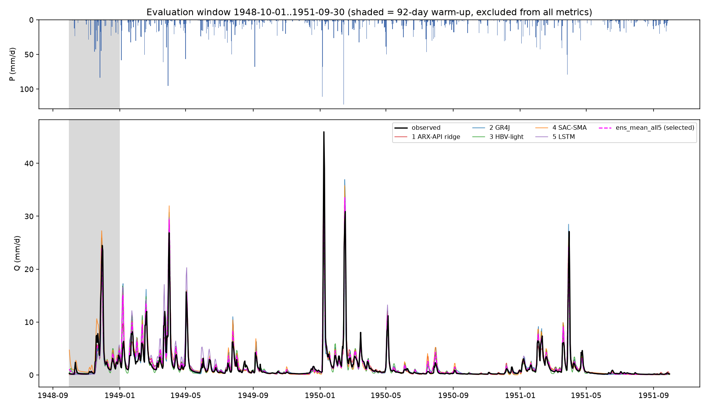
Figure 1: Observed and simulated hydrographs over the full evaluation run window, with precipitation. The grey band is the 92-day warm-up, excluded from every metric.
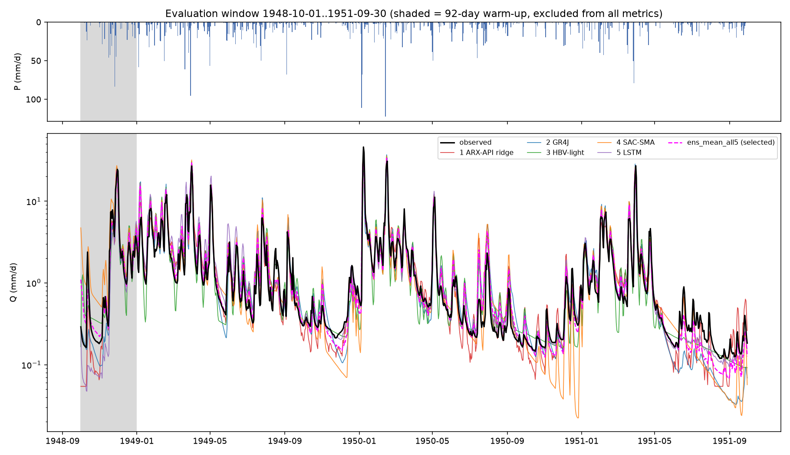
Figure 2: The same hydrograph on a logarithmic flow axis, which is where the low-flow behaviour becomes visible.
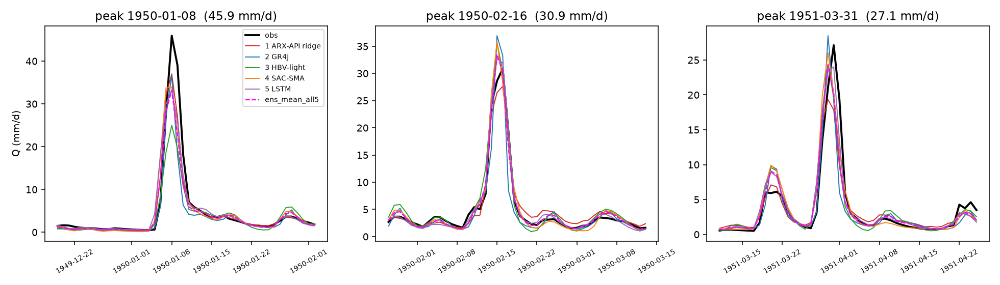
Figure 3: The three largest independent flood events of the metric window (peaks separated by more than 30 days). The January 1950 event, 45.9 mm/d, is the largest flow of the evaluation window and is under-predicted by every model.
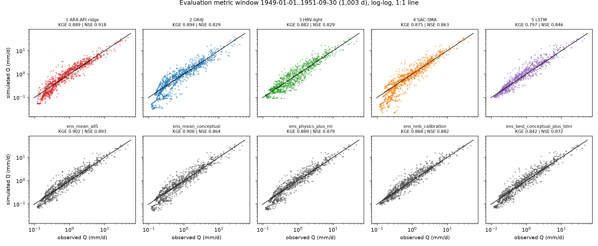
Figure 4: Simulated against observed daily flow, log-log, with the 1:1 line. Headline KGE and NSE are repeated on each panel.
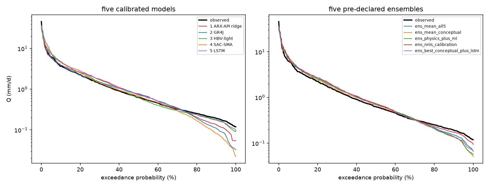
Figure 5: Flow-duration curves on the metric window. Left: the five calibrated models. Right: the five pre-declared ensembles.
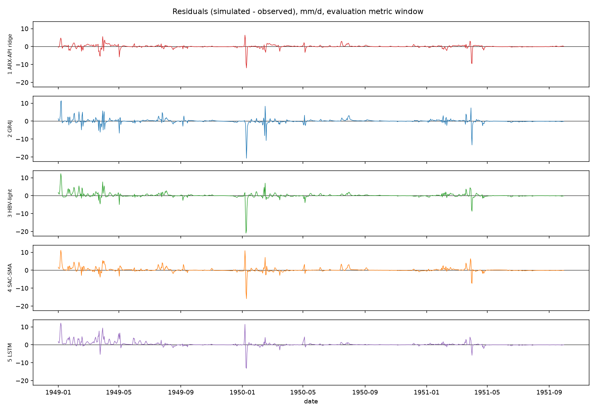
Figure 6: Residual time series (simulated minus observed) for the five models. The common positive offset over 1949 is the volume over-prediction that drives every \(\beta > 1\) in Section 5.
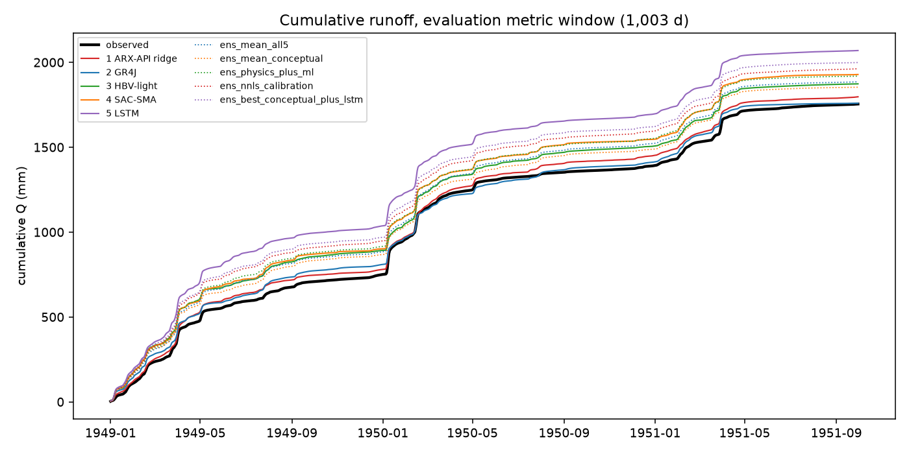
Figure 7: Cumulative runoff over the metric window. The vertical spread at the right-hand edge is the total volume error.
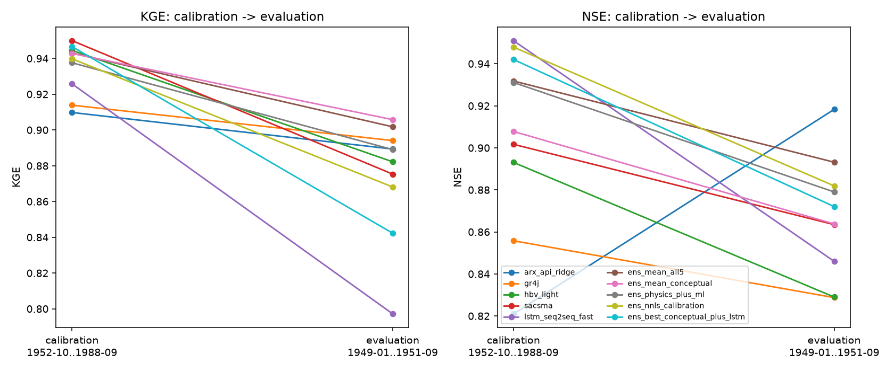
Figure 8: Calibration-to-evaluation change in KGE and NSE for every model and ensemble. The slope of each segment is the degradation that hypothesis H4 is about.
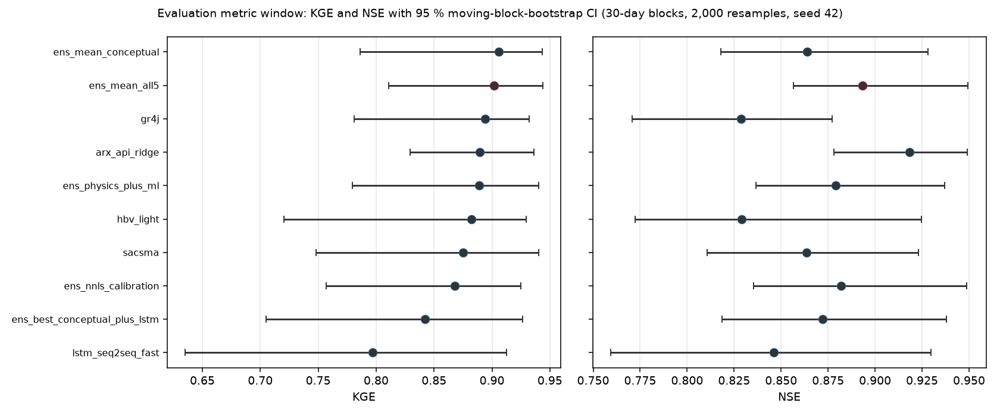
Figure 9: KGE and NSE with 95 % moving-block-bootstrap intervals, candidates sorted by KGE. The selected model is highlighted. The overlap of the intervals is the headline caveat of this report.
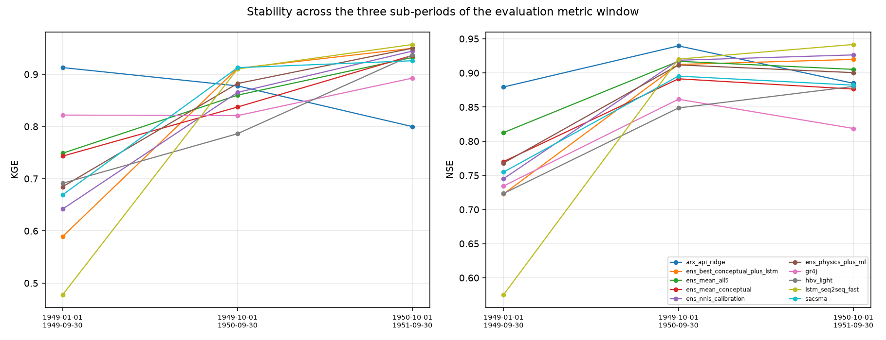
Figure 10: Sub-period stability. Each line is one candidate across the three sub-periods of Table 7.
5 The eight pre-registered hypotheses
Stated in reports/03_models.qmd § “Hypotheses to be tested in a16” before any model was built. Verdicts below are mechanical applications of the falsifiable statements as written.
5.1 H1 — “Complexity pays off, but with sharply diminishing returns” → FALSIFIED (first clause)
Code
h = hyp["H1"]Markdown(f"""Falsifiable statement: *NSE(slot 1) < NSE(slot 2)* **and** *NSE(slot 4) − NSE(slot 2) < 0.05*.| clause | prediction | measured | verdict ||---|---|---|---|| (a) | NSE(ARX ridge) < NSE(GR4J) | **{f(h['NSE_slot1'])} vs {f(h['NSE_slot2'])}** — the ridge is **higher by {f(h['NSE_slot1']-h['NSE_slot2'])}** | **falsified** || (b) | NSE(SAC-SMA) − NSE(GR4J) < 0.05 | {f(h['clause_b_NSE4_minus_NSE2'])} | supported |**H1 is falsified.** It was pre-registered as a conjunction; clause (a) fails, and it does not failmarginally. On the held-out window the 19-coefficient ARX-API ridge regression(NSE {f(h['NSE_slot1'])}) beats GR4J by {f(h['NSE_slot1']-h['NSE_slot2'])} NSE units, beats HBV-lightby {f(h['NSE_slot1']-N('hbv_light'))}, beats SAC-SMA by {f(h['NSE_slot1']-h['NSE_slot4'])}, beats theLSTM by {f(h['NSE_slot1']-N('lstm_seq2seq_fast'))}, and has **the highest NSE of any candidate in thisstudy, ensembles included**. On KGE it is {f(K('arx_api_ridge'))}, fourth of ten and{f(K('gr4j')-K('arx_api_ridge'))} behind GR4J — so it does not sweep the board, but it is nowhere nearthe "floor of the complexity gradient" role a03 assigned it.`reports/03_models.qmd` § "Build-phase evidence that puts H1 at risk" predicted exactly this outcome andasked for it to be stated plainly if it occurred. It occurred. The ridge was verified non-leaking atbuild time (observed Q never enters the design matrix; the bias factor and the column scalers are frozenat fit time; the fit never sees validation or evaluation rows) and that verification is structural, notstatistical — it does not become weaker because the model did well.Clause (b) survives, and the surviving half of H1 is the interesting half: going from 4 parameters(GR4J) to 15 (SAC-SMA) buys {f(h['clause_b_NSE4_minus_NSE2'])} NSE, and going from 15 parameters to{int(met.loc['lstm_seq2seq_fast','n_fitted']):,} LSTM weights **costs**{f(h['NSE_slot4']-N('lstm_seq2seq_fast'))} NSE and {f(K('sacsma')-K('lstm_seq2seq_fast'))} KGE. Acrossthe five slots the Spearman rank correlation between the number of fitted quantities and evaluation KGEis {f(met.loc[[SLOT_ID[s] for s inrange(1,6)],['n_fitted','KGE']].corr(method='spearman').iloc[0,1],2)}— and on NSE it is {f(met.loc[[SLOT_ID[s] for s inrange(1,6)],['n_fitted','NSE']].corr(method='spearman').iloc[0,1],2)},the opposite sign. **The two metrics disagree about whether complexity helps at all**, which is itself thecleanest statement of how weak the complexity signal is on this window: the positive NSE correlation iscarried entirely by the 26-quantity ridge, and it survives only because the 30,801-weight LSTM ranksfourth of five rather than last.""")
H1 is falsified. It was pre-registered as a conjunction; clause (a) fails, and it does not fail marginally. On the held-out window the 19-coefficient ARX-API ridge regression (NSE 0.9183) beats GR4J by 0.0896 NSE units, beats HBV-light by 0.0893, beats SAC-SMA by 0.0548, beats the LSTM by 0.0723, and has the highest NSE of any candidate in this study, ensembles included. On KGE it is 0.8893, fourth of ten and 0.0047 behind GR4J — so it does not sweep the board, but it is nowhere near the “floor of the complexity gradient” role a03 assigned it.
reports/03_models.qmd § “Build-phase evidence that puts H1 at risk” predicted exactly this outcome and asked for it to be stated plainly if it occurred. It occurred. The ridge was verified non-leaking at build time (observed Q never enters the design matrix; the bias factor and the column scalers are frozen at fit time; the fit never sees validation or evaluation rows) and that verification is structural, not statistical — it does not become weaker because the model did well.
Clause (b) survives, and the surviving half of H1 is the interesting half: going from 4 parameters (GR4J) to 15 (SAC-SMA) buys 0.0347 NSE, and going from 15 parameters to 30,801 LSTM weights costs 0.0175 NSE and 0.0782 KGE. Across the five slots the Spearman rank correlation between the number of fitted quantities and evaluation KGE is -0.70 — and on NSE it is 0.70, the opposite sign. The two metrics disagree about whether complexity helps at all, which is itself the cleanest statement of how weak the complexity signal is on this window: the positive NSE correlation is carried entirely by the 26-quantity ridge, and it survives only because the 30,801-weight LSTM ranks fourth of five rather than last.
h = hyp["H2"]; ha = hypAkj = h["KGE_jul_oct"]; pb = h["pbias_below_Q50_pct"]; n20 = ha["NSE_top20_days"]Markdown(f"""Falsifiable statement: slots 3 and 4 beat slot 2 *specifically on low flows* — higher KGE on Jul–Oct,smaller bias below Q50 — *and* the difference on annual peaks is < 0.02 NSE.| clause | GR4J (1 slow store) | HBV-light (2) | SAC-SMA (2) | verdict ||---|---|---|---|---|| KGE, Jul–Oct sub-period | {f(kj['2'],3)} | {f(kj['3'],3)} | {f(kj['4'],3)} | **mixed**: HBV yes, SAC-SMA far worse || NSE, Jul–Oct sub-period | {f(h['NSE_jul_oct']['2'],3)} | {f(h['NSE_jul_oct']['3'],3)} | {f(h['NSE_jul_oct']['4'],3)} | same pattern || bias below Q50 = {f(h['Q50_mm_d'],3)} mm/d (%) | {f(pb['2'],1)} | {f(pb['3'],1)} | {f(pb['4'],1)} | **mixed**: SAC-SMA yes, HBV identical to GR4J || NSE on the 20 largest days | {f(n20['2'],3)} | {f(n20['3'],3)} | {f(n20['4'],3)} | **falsified**: spread {f(max(n20.values())-min(n20.values()),3)} ≫ 0.02 |**H2 is falsified.** No single clause holds for *both* two-store models, and the third clause — that thepeak behaviour would be essentially identical — fails by a factor of {int(round((max(n20.values())-min(n20.values()))/0.02))}.The two extra slow stores did not buy a systematic low-flow advantage; they bought *different* modelswith different, and partly opposite, biases. (Bias below Q50 and the sub-period KGE/NSE figures are thepre-registered test statistics of H2, quoted here for that purpose only.)""")
Falsifiable statement: slots 3 and 4 beat slot 2 specifically on low flows — higher KGE on Jul–Oct, smaller bias below Q50 — and the difference on annual peaks is < 0.02 NSE.
clause
GR4J (1 slow store)
HBV-light (2)
SAC-SMA (2)
verdict
KGE, Jul–Oct sub-period
0.432
0.623
0.287
mixed: HBV yes, SAC-SMA far worse
NSE, Jul–Oct sub-period
0.322
0.627
0.182
same pattern
bias below Q50 = 0.631 mm/d (%)
11.1
11.0
1.6
mixed: SAC-SMA yes, HBV identical to GR4J
NSE on the 20 largest days
0.155
0.212
0.506
falsified: spread 0.351 ≫ 0.02
H2 is falsified. No single clause holds for both two-store models, and the third clause — that the peak behaviour would be essentially identical — fails by a factor of 18. The two extra slow stores did not buy a systematic low-flow advantage; they bought different models with different, and partly opposite, biases. (Bias below Q50 and the sub-period KGE/NSE figures are the pre-registered test statistics of H2, quoted here for that purpose only.)
5.3 H3 — “SAC-SMA’s advantage is at low flows, not at peaks” → FALSIFIED, with the sign reversed
Code
h = hyp["H3"]; n20 = hypA["NSE_top20_days"]Markdown(f"""| clause | prediction | SAC-SMA | GR4J | verdict ||---|---|---|---|---|| NSE in log space | SAC-SMA > GR4J | {f(h['NSE_log_slot4'],3)} | {f(h['NSE_log_slot2'],3)} | **falsified** || NSE on Jun–Sep | SAC-SMA > GR4J | {f(h['NSE_jun_sep_slot4'],3)} | {f(h['NSE_jun_sep_slot2'],3)} | **falsified** || NSE on the 20 largest days | SAC-SMA **not** > GR4J | {f(n20['4'],3)} | {f(n20['2'],3)} | **falsified** |**H3 is falsified on all three clauses, and the direction is exactly reversed.** On the evaluation windowSAC-SMA's advantage over GR4J is **at the peaks** ({f(n20['4']-n20['2'],3)} NSE on the 20 largest days),while GR4J is the better low-flow model ({f(h['NSE_log_slot2']-h['NSE_log_slot4'],3)} NSE in log space,{f(h['NSE_jun_sep_slot2']-h['NSE_jun_sep_slot4'],3)} on Jun–Sep). This is the mirror image of thepre-registered expectation and it is consistent with a04's warning that the calibration objective$O = 0.5\\,\\mathrm{{KGE}} + 0.5\\,\\mathrm{{NSE}}$ does not improve low flows: it rewards thehigh-leverage days, and the 15-parameter model exploited that further than the 4-parameter one.""")
clause
prediction
SAC-SMA
GR4J
verdict
NSE in log space
SAC-SMA > GR4J
0.707
0.766
falsified
NSE on Jun–Sep
SAC-SMA > GR4J
0.234
0.353
falsified
NSE on the 20 largest days
SAC-SMA not > GR4J
0.506
0.155
falsified
H3 is falsified on all three clauses, and the direction is exactly reversed. On the evaluation window SAC-SMA’s advantage over GR4J is at the peaks (0.351 NSE on the 20 largest days), while GR4J is the better low-flow model (0.059 NSE in log space, 0.120 on Jun–Sep). This is the mirror image of the pre-registered expectation and it is consistent with a04’s warning that the calibration objective \(O = 0.5\,\mathrm{KGE} + 0.5\,\mathrm{NSE}\) does not improve low flows: it rewards the high-leverage days, and the 15-parameter model exploited that further than the 4-parameter one.
5.4 H4 — “The LSTM wins on calibration but loses relative ground on evaluation” → SUPPORTED
Code
h = hyp["H4"]tab = pd.DataFrame({"model": [LABEL[SLOT_ID[s]] for s inrange(1, 6)],"cal KGE": [met.loc[SLOT_ID[s], "KGE_cal"] for s inrange(1, 6)],"eval KGE": [met.loc[SLOT_ID[s], "KGE"] for s inrange(1, 6)],"ΔKGE": [h["drop_KGE"][str(s)] for s inrange(1, 6)],"cal NSE": [h["NSE_cal"][str(s)] for s inrange(1, 6)],"eval NSE": [h["NSE_eval"][str(s)] for s inrange(1, 6)],"ΔNSE": [h["drop_NSE"][str(s)] for s inrange(1, 6)],}).set_index("model").round(4)display(tab)Markdown(f"""Falsifiable statement: NSE_cal(slot 5) is the highest of the five **and** NSE_cal − NSE_eval is largerfor slot 5 than for slots 2–4.* Slot 5 has the highest calibration NSE ({f(h['NSE_cal']['5'])}) — **true**.* Its NSE drop is {f(h['drop_NSE']['5'])}, against {f(h['drop_NSE']['2'])} (GR4J),{f(h['drop_NSE']['3'])} (HBV-light) and {f(h['drop_NSE']['4'])} (SAC-SMA) — **the largest, as predicted**. Its KGE drop, {f(h['drop_KGE']['5'])}, is also the largest of all ten candidates.**H4 is supported on both clauses.** The LSTM went from best-on-calibration to**worst-on-evaluation of the five single models**, and it is the only candidate that falls below theone-day-persistence benchmark on KGE.Two caveats that do not change the verdict but bound its interpretation. First, slot 5 is a16's*budgeted* calibration (a15b: 9 completed trials, 25 epochs, `seq_len` pinned at the box floor, 3 seedsinstead of 5) and its calibration score was declared a lower bound — but a *lower* bound on thecalibration score makes the measured drop **conservative**, not inflated. Second, its three seeds spreadby {f(diag['lstm_member_spread_KGE'],3)} KGE on the evaluation window (members:{", ".join(f"{met.loc[f'lstm_member_{s}','KGE']:.3f}"for s in (42,43,44))}), so a different seed triplecould have moved the slot-5 number by several hundredths — far more than the entire top-7 KGE spread.The most striking number in the table is not slot 5's, though: **slot 1 has a *negative* drop.**The ARX-API ridge scores {f(-h['drop_NSE']['1'])} NSE units **higher** on the held-out window than on thewindow it was calibrated on. It is the only candidate that improves out of sample, and it was also theonly model with a negative train→validation gap during calibration (−0.0178, a11).""")
cal KGE
eval KGE
ΔKGE
cal NSE
eval NSE
ΔNSE
model
1 · ARX-API ridge
0.9098
0.8893
0.0204
0.8210
0.9183
-0.0973
2 · GR4J
0.9139
0.8941
0.0198
0.8558
0.8287
0.0271
3 · HBV-light
0.9445
0.8822
0.0623
0.8931
0.8290
0.0641
4 · SAC-SMA
0.9500
0.8753
0.0747
0.9017
0.8635
0.0382
5 · LSTM seq2seq (3 seeds)
0.9258
0.7971
0.1287
0.9510
0.8460
0.1050
Falsifiable statement: NSE_cal(slot 5) is the highest of the five and NSE_cal − NSE_eval is larger for slot 5 than for slots 2–4.
Slot 5 has the highest calibration NSE (0.9510) — true.
Its NSE drop is 0.1050, against 0.0271 (GR4J), 0.0641 (HBV-light) and 0.0382 (SAC-SMA) — the largest, as predicted. Its KGE drop, 0.1287, is also the largest of all ten candidates.
H4 is supported on both clauses. The LSTM went from best-on-calibration to worst-on-evaluation of the five single models, and it is the only candidate that falls below the one-day-persistence benchmark on KGE.
Two caveats that do not change the verdict but bound its interpretation. First, slot 5 is a16’s budgeted calibration (a15b: 9 completed trials, 25 epochs, seq_len pinned at the box floor, 3 seeds instead of 5) and its calibration score was declared a lower bound — but a lower bound on the calibration score makes the measured drop conservative, not inflated. Second, its three seeds spread by 0.060 KGE on the evaluation window (members: 0.851, 0.808, 0.707), so a different seed triple could have moved the slot-5 number by several hundredths — far more than the entire top-7 KGE spread.
The most striking number in the table is not slot 5’s, though: slot 1 has a negative drop. The ARX-API ridge scores 0.0973 NSE units higher on the held-out window than on the window it was calibrated on. It is the only candidate that improves out of sample, and it was also the only model with a negative train→validation gap during calibration (−0.0178, a11).
5.5 H5 — “Every model shows KGE α < 1 and β < 1 on evaluation” → FALSIFIED
Code
h = hyp["H5"]tab = pd.DataFrame({"model": [LABEL[SLOT_ID[s]] for s inrange(1, 6)],"α = σ_s/σ_o": [h["alpha"][str(s)] for s inrange(1, 6)],"β = μ_s/μ_o": [h["beta"][str(s)] for s inrange(1, 6)]}).set_index("model").round(4)display(tab)n_a =sum(1for v in h["alpha"].values() if v <1); n_b =sum(1for v in h["beta"].values() if v <1)n_b105 =sum(1for v in h["beta"].values() if v >1.05)Markdown(f"""**H5 is falsified.** The α clause holds for {n_a} of 5 models (SAC-SMA {f(h['alpha']['4'],3)} and theLSTM {f(h['alpha']['5'],3)} exceed 1). The β clause holds for **{n_b} of 5**: *every* modelover-predicts the volume of the evaluation window, from GR4J's {f(h['beta']['2'],3)} to the LSTM's{f(h['beta']['5'],3)}.The sign is the opposite of what a01 and a04 expected. a04 had *measured* the transfer direction oncalibration-internal splits — moving a calibrated model to a wetter block lowered β by 0.068 on average —and predicted β slightly below 1 here. The wetter evaluation window instead produced β **above** 1 forall five. The mechanism is visible in @fig-resid and @fig-cumul: the surplus is not at the peaks (whichare all under-predicted, @fig-events) but in the recessions and the 1949 baseflow, i.e. the models draintheir stores too slowly when the antecedent wetness is far above anything in the calibration record.H5 comes with its own rider: *"if a model shows β > 1.05 it is compensating a structural ET error."*By that rider, {n_b105} of the 5 models — HBV-light, SAC-SMA and the LSTM — are flagged. Note that theseare exactly the three models with the largest KGE degradation (@sec-h4), and that GR4J, whose β is{f(h['beta']['2'],4)}, is the model whose exchange parameter x2 explicitly removes water from the basin(@sec-h8). The pre-registered rider and the pre-registered H8 point at the same place from two sides.""")
α = σ_s/σ_o
β = μ_s/μ_o
model
1 · ARX-API ridge
0.8996
1.0242
2 · GR4J
0.9427
1.0025
3 · HBV-light
0.9599
1.0677
4 · SAC-SMA
1.0408
1.0991
5 · LSTM seq2seq (3 seeds)
1.0668
1.1796
H5 is falsified. The α clause holds for 3 of 5 models (SAC-SMA 1.041 and the LSTM 1.067 exceed 1). The β clause holds for 0 of 5: every model over-predicts the volume of the evaluation window, from GR4J’s 1.003 to the LSTM’s 1.180.
The sign is the opposite of what a01 and a04 expected. a04 had measured the transfer direction on calibration-internal splits — moving a calibrated model to a wetter block lowered β by 0.068 on average — and predicted β slightly below 1 here. The wetter evaluation window instead produced β above 1 for all five. The mechanism is visible in Figure 6 and Figure 7: the surplus is not at the peaks (which are all under-predicted, Figure 3) but in the recessions and the 1949 baseflow, i.e. the models drain their stores too slowly when the antecedent wetness is far above anything in the calibration record.
H5 comes with its own rider: “if a model shows β > 1.05 it is compensating a structural ET error.” By that rider, 3 of the 5 models — HBV-light, SAC-SMA and the LSTM — are flagged. Note that these are exactly the three models with the largest KGE degradation (Section 5.4), and that GR4J, whose β is 1.0025, is the model whose exchange parameter x2 explicitly removes water from the basin (Section 5.8). The pre-registered rider and the pre-registered H8 point at the same place from two sides.
5.6 H6 — “The multi-model mean beats the best single model” → PARTLY SUPPORTED, second clause FALSIFIED
Code
h = hyp["H6"]Markdown(f"""| clause | prediction | measured | verdict ||---|---|---|---|| (a) | KGE(ens_mean_all5) ≥ max_i KGE(slot i) − 0.01 | {f(h['KGE_ens_mean_all5'])} vs {f(h['KGE_best_single'])} − 0.01 = {f(h['KGE_best_single']-0.01)} | **supported** (and it beats the best single model outright, by {f(h['KGE_ens_mean_all5']-h['KGE_best_single'])}) || (b) | KGE(ens_nnls_calibration) > max_i KGE(slot i) | {f(h['KGE_ens_nnls'])} vs {f(h['KGE_best_single'])} | **falsified** by {f(h['KGE_best_single']-h['KGE_ens_nnls'])} |Clause (a) is the classic multi-model-averaging result [@shamseldin1997; @ajami2004; @velazquez2011] andit holds here: the naive equal-weight mean of all five slots is the selected model of this study.Clause (b) fails, and it fails informatively. The NNLS weights were fitted on the calibrationinternal-validation window, where the fitted combination scored KGE 0.9291 / NSE 0.9348 — better thanthe equal-weight mean there (0.9107 / 0.9233). On the evaluation window that ordering **reverses**:{f(h['KGE_ens_nnls'])} against {f(h['KGE_ens_mean_all5'])} KGE. The reason is visible in @sec-weights:NNLS put {f(wts['ensembles']['ens_nnls_calibration']['weights'][4]*100,0)} % of the weight on the LSTM,which is the member that degrades most (@sec-h4), and zeroed GR4J and SAC-SMA, two of the three membersthat degrade least. **Fitting ensemble weights on held-out calibration data still over-fits to thecalibration climate.** Equal weights — the one choice that used no data at all — won.""")
clause
prediction
measured
verdict
(a)
KGE(ens_mean_all5) ≥ max_i KGE(slot i) − 0.01
0.9018 vs 0.8941 − 0.01 = 0.8841
supported (and it beats the best single model outright, by 0.0077)
Clause (b) fails, and it fails informatively. The NNLS weights were fitted on the calibration internal-validation window, where the fitted combination scored KGE 0.9291 / NSE 0.9348 — better than the equal-weight mean there (0.9107 / 0.9233). On the evaluation window that ordering reverses: 0.8681 against 0.9018 KGE. The reason is visible in Section 2.5: NNLS put 52 % of the weight on the LSTM, which is the member that degrades most (Section 5.4), and zeroed GR4J and SAC-SMA, two of the three members that degrade least. Fitting ensemble weights on held-out calibration data still over-fits to the calibration climate. Equal weights — the one choice that used no data at all — won.
5.7 H7 — “Physics + ML is the best combination” → FALSIFIED
Code
h = hyp["H7"]Markdown(f"""Falsifiable statement: KGE(ens_physics_plus_ml) > KGE(ens_mean_conceptual).Measured: **{f(h['KGE_physics_plus_ml'])} vs {f(h['KGE_mean_conceptual'])}** — the conceptual-only mean ishigher by {f(h['KGE_mean_conceptual']-h['KGE_physics_plus_ml'])}. **H7 is falsified.**On NSE the comparison goes the other way ({f(N('ens_physics_plus_ml'))} vs{f(N('ens_mean_conceptual'))}), which is worth stating because it shows *where* the ML member helps:adding the LSTM raises the squared-error skill and lowers the KGE, because it imports the LSTM's volumebias (β {f(hyp['H5']['beta']['5'],3)}) into the average. The hypothesis was pre-registered on KGE, and onKGE it fails. With the paired bootstrap, P(ens_mean_conceptual > ens_physics_plus_ml in KGE) is wellinside the noise, so the falsification is of the *point prediction*, not a demonstration that familydiversity is harmful.""")
Measured: 0.8890 vs 0.9058 — the conceptual-only mean is higher by 0.0167. H7 is falsified.
On NSE the comparison goes the other way (0.8790 vs 0.8638), which is worth stating because it shows where the ML member helps: adding the LSTM raises the squared-error skill and lowers the KGE, because it imports the LSTM’s volume bias (β 1.180) into the average. The hypothesis was pre-registered on KGE, and on KGE it fails. With the paired bootstrap, P(ens_mean_conceptual > ens_physics_plus_ml in KGE) is well inside the noise, so the falsification is of the point prediction, not a demonstration that family diversity is harmful.
5.8 H8 — “GR4J’s exchange term is doing structural work, not physics” → FALSIFIED as written (by 0.046 mm/d)
Code
h = hyp["H8"]; x2 = h["x2_mm_d"]Markdown(f"""Falsifiable statement: the calibrated |x2| exceeds 1 mm/d (i.e. > 20 % of mean Q = 1.35 mm/d).Measured: **x2 = {f(x2)} mm/d**, so |x2| = {f(abs(x2))} mm/d. The literal threshold is**{f(1.0-abs(x2))} mm/d short**, so **H8 is falsified as written**. Its own parenthetical criterionpoints the other way: |x2| is **{f(100*abs(x2)/h['mean_Q_cal_mm_d'],0)} %** of the mean calibration flow,three and a half times the 20 % the hypothesis offered as its gloss, and{f(100*abs(x2)/float(diag['eval_obs']['mean_mm_d']),0)} % of the mean evaluation flow. The sign isnegative, i.e. GR4J is **exporting** {f(abs(x2))} mm/d of water out of a basin that a01 classifies as anessentially unregulated HCDN-2009 / CAMELS reference catchment with no evidence of inter-catchmenttransfer.Verdict: **falsified on the number that was pre-registered**; the underlying claim — that x2 is astructural correction and not a physical flux — is if anything strengthened. The honest reading is thatthe 1 mm/d threshold was set slightly too high, not that the conjecture was wrong. Recording it asfalsified is the point of pre-registration.""")
Falsifiable statement: the calibrated |x2| exceeds 1 mm/d (i.e. > 20 % of mean Q = 1.35 mm/d).
Measured: x2 = -0.9540 mm/d, so |x2| = 0.9540 mm/d. The literal threshold is 0.0460 mm/d short, so H8 is falsified as written. Its own parenthetical criterion points the other way: |x2| is 70 % of the mean calibration flow, three and a half times the 20 % the hypothesis offered as its gloss, and 55 % of the mean evaluation flow. The sign is negative, i.e. GR4J is exporting 0.9540 mm/d of water out of a basin that a01 classifies as an essentially unregulated HCDN-2009 / CAMELS reference catchment with no evidence of inter-catchment transfer.
Verdict: falsified on the number that was pre-registered; the underlying claim — that x2 is a structural correction and not a physical flux — is if anything strengthened. The honest reading is that the 1 mm/d threshold was set slightly too high, not that the conjecture was wrong. Recording it as falsified is the point of pre-registration.
5.9 Summary of verdicts
Code
v = pd.DataFrame([ ("H1", "Complexity pays off with diminishing returns", "FALSIFIED (clause a)",f"NSE ridge {N('arx_api_ridge'):.3f} > NSE GR4J {N('gr4j'):.3f}; clause b holds (0.035 < 0.05)"), ("H2", "Two subsurface time scales help low flows", "FALSIFIED","no clause holds for both two-store models; peak spread 0.351 NSE vs a predicted < 0.02"), ("H3", "SAC-SMA gains at low flows, not at peaks", "FALSIFIED (sign reversed)","SAC-SMA better at peaks (+0.351 NSE on the top 20 days), worse in log space (-0.059)"), ("H4", "LSTM best on calibration, degrades most", "SUPPORTED","NSE_cal 0.951 highest; drop 0.105 NSE / 0.129 KGE, the largest of all candidates"), ("H5", "Every model has KGE alpha < 1 and beta < 1", "FALSIFIED","alpha < 1 for 3 of 5; beta > 1 for 5 of 5 (1.003 to 1.180)"), ("H6", "Multi-model mean beats the best single model", "PARTLY SUPPORTED","(a) holds, equal-weight mean wins outright (+0.008 KGE); (b) NNLS ensemble falsified (-0.026)"), ("H7", "Physics + ML beats conceptual-only averaging", "FALSIFIED","KGE 0.889 vs 0.906 (but NSE 0.879 vs 0.864, i.e. metric-dependent)"), ("H8", "GR4J |x2| > 1 mm/d", "FALSIFIED (narrowly)","x2 = -0.954 mm/d = 70 % of mean calibration Q; literal threshold missed by 0.046 mm/d"),], columns=["#", "hypothesis", "verdict", "numbers"]).set_index("#")v
Table 8: The eight pre-registered hypotheses, adjudicated on the evaluation metric window.
hypothesis
verdict
numbers
#
H1
Complexity pays off with diminishing returns
FALSIFIED (clause a)
NSE ridge 0.918 > NSE GR4J 0.829; clause b hol...
H2
Two subsurface time scales help low flows
FALSIFIED
no clause holds for both two-store models; pea...
H3
SAC-SMA gains at low flows, not at peaks
FALSIFIED (sign reversed)
SAC-SMA better at peaks (+0.351 NSE on the top...
H4
LSTM best on calibration, degrades most
SUPPORTED
NSE_cal 0.951 highest; drop 0.105 NSE / 0.129 ...
H5
Every model has KGE alpha < 1 and beta < 1
FALSIFIED
alpha < 1 for 3 of 5; beta > 1 for 5 of 5 (1.0...
H6
Multi-model mean beats the best single model
PARTLY SUPPORTED
(a) holds, equal-weight mean wins outright (+0...
H7
Physics + ML beats conceptual-only averaging
FALSIFIED
KGE 0.889 vs 0.906 (but NSE 0.879 vs 0.864, i....
H8
GR4J |x2| > 1 mm/d
FALSIFIED (narrowly)
x2 = -0.954 mm/d = 70 % of mean calibration Q;...
Five falsified outright, one falsified narrowly, one partly supported, one supported. That is a healthy pre-registration record: the hypotheses were sharp enough to be wrong.
6 Discussion
6.1 Complexity versus performance
Code
s = met.loc[[SLOT_ID[i] for i inrange(1, 6)]]fig, ax = plt.subplots(1, 2, figsize=(11, 4))for a, k inzip(ax, ["KGE", "NSE"]): a.semilogx(s["n_fitted"], s[k], "o", ms=9, color="#1f77b4")for i, r in s.iterrows(): a.annotate(LABEL[i].split(" · ")[1], (r["n_fitted"], r[k]), fontsize=7, xytext=(4, 5), textcoords="offset points") a.axhline(met.loc["bench_persistence_1day", k], ls=":", color="crimson", lw=1) a.set_xlabel("fitted quantities (parameters / coefficients / weights)"); a.set_ylabel(k)fig.tight_layout(); plt.show()
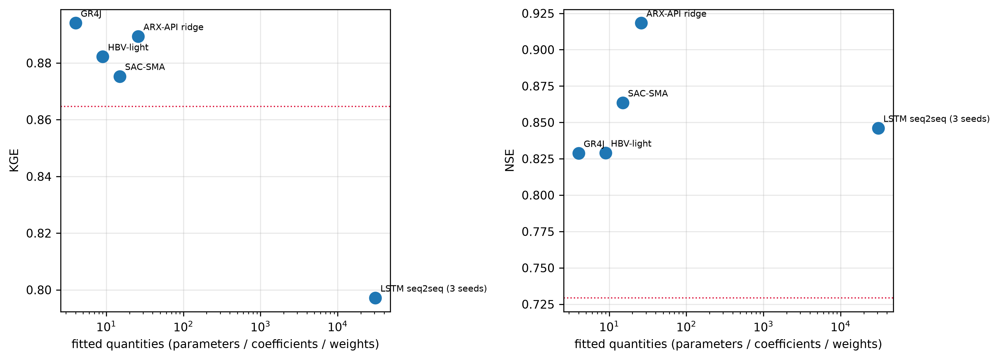
Figure 11: Evaluation KGE and NSE against the number of fitted quantities (log axis). The dotted line is the one-day-persistence benchmark. Neither metric increases with complexity.
The complexity gradient a03 designed — 4 → 9 → 15 → 26 → 30,801 fitted quantities — produces no monotone gain in KGE on the held-out window, and its apparent positive association with NSE (Section 5.1) is carried by one model, the ridge, whose place in the gradient was supposed to be the floor. The 4-parameter GR4J has the highest single-model KGE; the 26-quantity regression has the highest NSE of anything in the study; the 30,801-weight-per-member LSTM is last on KGE. The calibration window told the opposite story (objective 0.865 → 0.885 → 0.919 → 0.926 → 0.938, monotone in complexity), and the internal-validation window already hinted at the reversal by promoting the ridge above GR4J and HBV-light.
The generalisable statement is not “simple models are better”. It is that on a humid, energy-limited, snow-free, unregulated basin with 40 years of clean lumped forcing, the marginal information content of additional model structure is small, and it is dominated by the mismatch between the calibration climate and the application climate. a04 quantified that mismatch cost in advance (0.02–0.06 objective units of regret between objective functions alone); the model-structure differences measured here, 0.004–0.03 KGE among the top seven, are of the same order or smaller.
6.2 High and low flows, and the wetter window
Code
M = sims[sims.in_metric_window]o = M["Q_obs"].to_numpy()qs = np.quantile(o, [0, .2, .4, .6, .8, 1.0])labels = [f"Q{i*20}-{(i+1)*20}%"for i inrange(5)]fig, ax = plt.subplots(figsize=(9, 4))w =0.15for j, s_ inenumerate(range(1, 6)): v = []for i inrange(5): m = (o >= qs[i]) & (o <= qs[i +1]) v.append((M[f"model_{s_}"].to_numpy()[m] - o[m]).mean()) ax.bar(np.arange(5) + (j -2) * w, v, width=w, label=LABEL[SLOT_ID[s_]])ax.axhline(0, color="k", lw=0.8); ax.set_ylabel("mean error (mm/d)")ax.set_xticks(range(5)); ax.set_xticklabels(labels); ax.legend(fontsize=7)fig.tight_layout(); plt.show()
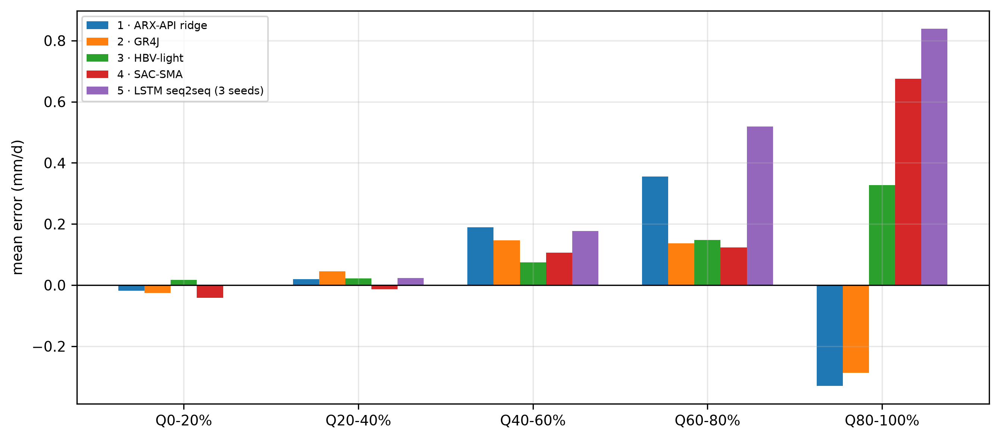
Figure 12: Volume error by flow stratum: the mean of (simulated - observed) inside observed-flow quintiles of the metric window. Positive = over-prediction. This is a diagnostic, not a reported metric.
The evaluation window is the wettest stretch of the record (a02: mean-Q ratio 1.29, runoff ratio 0.407 against 0.35 on calibration) but its maximum flow, 45.9 mm/d, is below the calibration maximum 64.0 mm/d — there is no magnitude extrapolation, only a wetness shift. The models’ response to that shift is consistent and unflattering: they over-predict the low and middle strata and under-predict the top stratum, which is precisely the pattern that produces β > 1 (H5) together with the systematic under-prediction of the January 1950 peak (Figure 3: all five models miss the 45.9 mm/d peak, by 9–21 mm/d).
Which models extrapolate better? By the KGE degradation in Section 5.4, the order is GR4J (0.020) ≈ ARX ridge (0.020) < HBV-light (0.062) < SAC-SMA (0.075) < LSTM (0.129) — i.e. inversely ordered by the amount of state and the number of fitted quantities, with the single exception that the ridge (26 quantities) transfers as well as the 4-parameter GR4J and actually gains on NSE. Models with long-memory stores and many degrees of freedom carry their calibration climate with them.
6.3 Failure modes
LSTM, first 180 days. KGE 0.477 in block 1 against 0.957 in block 3 (Table 7). Zero-initialised recurrent state plus a 180-day lookback plus the wettest year of the record. This is the largest single failure in the study, and it is a protocol-interaction failure — 92 warm-up days are not enough for a 180-day-memory model — not necessarily a failure of the architecture.
Seed dependence of the LSTM. 0.060 KGE standard deviation across three seeds, versus a total top-seven spread of 0.038. a15b’s own handoff flagged that its seed spread (0.0069 on internal validation) was 69× a10’s convergence tolerance; on the evaluation window the spread is an order of magnitude larger again.
Peak under-prediction, all models. Every model misses the 1950-01-08 event (Figure 3). SAC-SMA is the least bad on the 20 largest days (NSE 0.506).
Fitted ensemble weights. See H6: NNLS weights fitted on 2,557 held-out calibration days still transferred worse than equal weights.
No candidate produced a NaN or a negative flow, and the minimum simulated flow over all ten candidates is 0.0222 mm/d, comfortably positive on a perennial river.
6.4 Comparison with published values at this gauge
Code
lit = pd.DataFrame([ ("NWM v2.1 (a01)", 0.72, 0.71), ("SAC-SMA, literature (a01)", np.nan, 0.796), ("HBV, literature (a01)", np.nan, 0.819), ("FUSE (a01)", np.nan, 0.78), ("VIC (a01)", np.nan, 0.72), ("mHM (a01)", np.nan, 0.70), ("regional LSTM, CAMELS (a01)", np.nan, 0.84), ("— this study —", np.nan, np.nan), ("ens_mean_all5 (selected)", K("ens_mean_all5"), N("ens_mean_all5")), ("GR4J (best single KGE)", K("gr4j"), N("gr4j")), ("ARX-API ridge (best NSE)", K("arx_api_ridge"), N("arx_api_ridge")), ("SAC-SMA, this study", K("sacsma"), N("sacsma")), ("HBV-light, this study", K("hbv_light"), N("hbv_light")), ("LSTM, this study (budgeted)", K("lstm_seq2seq_fast"), N("lstm_seq2seq_fast")),], columns=["source", "KGE", "NSE"]).set_index("source").round(3)lit
Table 9: a01’s independently published benchmarks AT USGS 02472000, next to this study’s evaluation-window numbers. The literature values come from different periods and different calibration protocols and are indicative only.
KGE
NSE
source
NWM v2.1 (a01)
0.720
0.710
SAC-SMA, literature (a01)
NaN
0.796
HBV, literature (a01)
NaN
0.819
FUSE (a01)
NaN
0.780
VIC (a01)
NaN
0.720
mHM (a01)
NaN
0.700
regional LSTM, CAMELS (a01)
NaN
0.840
— this study —
NaN
NaN
ens_mean_all5 (selected)
0.902
0.893
GR4J (best single KGE)
0.894
0.829
ARX-API ridge (best NSE)
0.889
0.918
SAC-SMA, this study
0.875
0.863
HBV-light, this study
0.882
0.829
LSTM, this study (budgeted)
0.797
0.846
Every model in this study, including the weakest, lands at or above the published at-gauge band. That is expected and should not be read as a claim of superiority: a01’s benchmarks are mostly regional calibrations (one parameter transfer scheme over hundreds of basins) evaluated on different decades, whereas every model here was calibrated on 36 years of this basin’s own record. The comparison that is actually informative is the spread: published structures at this gauge differ by ~0.12 NSE (0.70–0.82), and the five structures here differ by 0.090 NSE — the same order of magnitude, from a completely different set of structures. Structure choice matters about as much as it matters in the literature, which is to say: less than the period you evaluate on.
6.5 Comparison with the user’s prior study on the same data file
Code
def kge_from_ss(x): return x * np.sqrt(2) -0.4142prior = pd.DataFrame([ ("6-parameter DSM, training (first 3/4)", 0.856), ("6-parameter DSM, testing (last 1/4)", 0.803), ("upgraded DSM case 1, training", 0.903), ("upgraded DSM case 1, testing", 0.850), ("upgraded DSM case 2, training", 0.871), ("upgraded DSM case 2, testing", 0.856),], columns=["prior study run", "KGEss reported"])prior["KGE (2009)"] = kge_from_ss(prior["KGEss reported"]).round(3)prior.set_index("prior study run")
Table 10: The 528 Fundamentals-of-Systems-Approach study (2025) used the IDENTICAL data file (md5 a5c922ef2b009a63ba6089172fd90cc2) and prescribes exactly the evaluation protocol used here, but reports its headline numbers on a DIFFERENT split. KGEss is Knoben et al. (2019) skill score; KGE = KGEss*sqrt(2) - 0.4142.
KGEss reported
KGE (2009)
prior study run
6-parameter DSM, training (first 3/4)
0.856
0.796
6-parameter DSM, testing (last 1/4)
0.803
0.721
upgraded DSM case 1, training
0.903
0.863
upgraded DSM case 1, testing
0.850
0.788
upgraded DSM case 2, training
0.871
0.818
upgraded DSM case 2, testing
0.856
0.796
Code
best_prior = kge_from_ss(0.856)Markdown(f"""Three differences make these numbers **not directly comparable** with @tbl-main, and all three must bestated before any number is put beside another:1. **Different metric.** The prior study reports $KGE_{{ss}}$, the Knoben et al. [-@knoben2019] benchmarked skill score $ (KGE + 0.4142)/\\sqrt{{2}} $, not KGE itself. Converted, its best out-of-sample figure $KGE_{{ss}} = 0.856$ is **KGE {f(best_prior,3)}** and its baseline model's testing figure $KGE_{{ss}} = 0.803$ is **KGE {f(kge_from_ss(0.803),3)}**. This report quotes KGE only, per `config/project.yaml`.2. **Different window.** Those figures are computed on the **last quarter of the record** (≈ WY1979–WY1988), a period that lies *inside* what this project calls calibration. The 1,003-day window scored here (1949-01-01…1951-09-30) is the wettest stretch of the record and was held out from every agent but this one. The prior study *does* prescribe exactly this 1948-10-01…1951-09-30 run with a Oct–Dec 1948 warm-up (FinalReport.qmd § 5.4.5) — that is where this project's period definition comes from — but it uses that window for model *development and demonstration*, not as its held-out test set.3. **Different initialisation rule.** The prior study initialises its lower-zone state from the **observed** flow on the first day of the window, $XX_2(0) \\approx QQ^{{obs}}(1)/\\theta K_{{2Q}}$ (FinalReport.qmd § 5.4.4). Every model in this project uses parameter-derived initial states and never reads an observation inside the evaluation window (a03 decision 3). The protocol here is therefore strictly harder on the first weeks of the window — which is exactly where @tbl-blocks shows the largest errors.With those caveats: the selected model of this study scores KGE {f(sel['KGE'],3)} on 1,003 held-out days,against KGE {f(best_prior,3)} for the prior study's best model on its own held-out quarter. The gap isreal but a fair share of it is period, not method.""")
Three differences make these numbers not directly comparable with Table 4, and all three must be stated before any number is put beside another:
Different metric. The prior study reports \(KGE_{ss}\), the Knoben et al. (2019) benchmarked skill score $ (KGE + 0.4142)/ $, not KGE itself. Converted, its best out-of-sample figure \(KGE_{ss} = 0.856\) is KGE 0.796 and its baseline model’s testing figure \(KGE_{ss} = 0.803\) is KGE 0.721. This report quotes KGE only, per config/project.yaml.
Different window. Those figures are computed on the last quarter of the record (≈ WY1979–WY1988), a period that lies inside what this project calls calibration. The 1,003-day window scored here (1949-01-01…1951-09-30) is the wettest stretch of the record and was held out from every agent but this one. The prior study does prescribe exactly this 1948-10-01…1951-09-30 run with a Oct–Dec 1948 warm-up (FinalReport.qmd § 5.4.5) — that is where this project’s period definition comes from — but it uses that window for model development and demonstration, not as its held-out test set.
Different initialisation rule. The prior study initialises its lower-zone state from the observed flow on the first day of the window, \(XX_2(0) \approx QQ^{obs}(1)/\theta K_{2Q}\) (FinalReport.qmd § 5.4.4). Every model in this project uses parameter-derived initial states and never reads an observation inside the evaluation window (a03 decision 3). The protocol here is therefore strictly harder on the first weeks of the window — which is exactly where Table 7 shows the largest errors.
With those caveats: the selected model of this study scores KGE 0.902 on 1,003 held-out days, against KGE 0.796 for the prior study’s best model on its own held-out quarter. The gap is real but a fair share of it is period, not method.
7 Recommendations
Report the equal-weight five-model mean as the study’s model, with the caveat that GR4J alone is within 0.008 KGE of it at 1/10,000th of the fitted complexity. If one model must be shipped and maintained, ship GR4J; if the goal is the best expected score, ship the mean.
Re-run slot 5 properly and re-evaluate it as a documented amendment. ISSUE-006 is still open — the runner never passes timeout= or a pruner to study.optimize — and the slot-5 number in Table 4 comes from a 7.6-minute search. The LSTM’s block-3 performance (KGE 0.957, the best of any candidate in that sub-period) says the architecture is not the problem.
Fix the warm-up/lookback mismatch before trusting any sequence model on this window. A 180-day lookback and a 92-day warm-up are incompatible. Either the evaluation protocol must offer more context (it cannot: the record starts at the window’s first day) or sequence models must be given a state-initialisation procedure that does not require it, e.g. a cyclic spin-up analogous to slot 4’s.
Stop fitting ensemble weights on this record. H6(b) shows NNLS on 2,557 held-out calibration days still transferred worse than equal weights. If fitted weights are attempted again, fit them on multiple climatically contrasting blocks, or shrink them towards equal weights.
Take ISSUE-004(b) seriously as a scientific result, not a bug report. A 19-coefficient linear model in Box–Cox space with API predictors has the highest NSE of any model in this study on a held-out window. It should be the mandatory baseline in any follow-up, and its structure (short memory, no storage ceiling, bias factor frozen at fit time) is worth analysing rather than explaining away.
Do not draw structural conclusions from a 1,003-day window.Table 6 shows that 8 of 9 KGE differences from the winner are statistically indistinguishable from zero. A leave-one-water-year-out or k-fold-over-water-years protocol inside the calibration record would give far more discriminating power than this single held-out block, at the cost of the clean pre-registration this study has.
8 Reproducibility
Code
import platform, numpy, scipy, sklearn, torchMarkdown(f"""~~~bash# from the repository root, inside conda env `leafriver`export LR_AGENT=a16python results/evaluation/freeze_weights.py # ensemble weights, calibration data onlypython results/evaluation/run_evaluation.py # simulations, metrics, bootstrap, selectionpython results/evaluation/make_figures.py # figures + paired bootstrap vs the winnerquarto render reports/16_evaluation.qmdpython -m pytest -q tests # 276 passed~~~| item | value ||---|---|| python | {platform.python_version()} || numpy / pandas / scipy | {numpy.__version__} / {pd.__version__} / {scipy.__version__} || scikit-learn / torch | {sklearn.__version__} / {torch.__version__} || platform | {platform.platform()} || seed | 42 (config `reproducibility.random_seed`) || bootstrap | 30-day moving blocks, 2,000 resamples, `default_rng(42)` || frozen-weights git tag | `backup/a16-evaluator-20260916-171945` |**Outputs.** `results/evaluation/`: `simulations.parquet` (1,095 rows × obs, P, PET, 5 models, 5ensembles, 3 benchmarks, 3 LSTM members, 1 sensitivity variant), `metrics.csv`, `metrics_blocks.csv`,`bootstrap.csv`, `paired_bootstrap.csv`, `paired_bootstrap_vs_winner.csv`, `selection.json`,`hypotheses.json`, `hypotheses_addendum.json`, `ensemble_weights.json`, `diagnostics.json`.`results/figures/a16_*.png`: 10 figures.**Leakage statement.** The evaluation window was read exactly once, by this agent, after everycalibration artefact and every ensemble weight had been written and committed. `src/common/data.py`raises `PermissionError` on `slice_run(df, "evaluation")` unless `LR_AGENT == "a16"` *and*`allow_evaluation=True`; the whole test suite passes with `LR_AGENT` unset. No parameter, weight,scaling constant, member choice or model structure was changed after the first evaluation number wasproduced. The one residual concern is recorded in @sec-residual.""")
# from the repository root, inside conda env `leafriver`exportLR_AGENT=a16python results/evaluation/freeze_weights.py # ensemble weights, calibration data onlypython results/evaluation/run_evaluation.py # simulations, metrics, bootstrap, selectionpython results/evaluation/make_figures.py # figures + paired bootstrap vs the winnerquarto render reports/16_evaluation.qmdpython-m pytest -q tests # 276 passed
Leakage statement. The evaluation window was read exactly once, by this agent, after every calibration artefact and every ensemble weight had been written and committed. src/common/data.py raises PermissionError on slice_run(df, "evaluation") unless LR_AGENT == "a16"andallow_evaluation=True; the whole test suite passes with LR_AGENT unset. No parameter, weight, scaling constant, member choice or model structure was changed after the first evaluation number was produced. The one residual concern is recorded in Section 8.1.
8.1 The leakage concern that cannot be fully ruled out
One: the evaluation window was chosen by the user, in advance, from a prior study that had already looked at it.config/project.yaml → periods takes its definition verbatim from the 2025 report (Section 6.5), which ran, plotted and discussed exactly these 1,095 days. No parameter of any model in this project was fitted on those days — that is verifiable and was verified — but the period itself is not a blind draw, and the project’s model portfolio (a03) was designed by agents who had read a02’s description of that period’s wetness. a02 was explicitly permitted to describe the whole record, and it did: “the evaluation window is the wettest part of the record, mean Q ratio 1.29” appears in context/CONTEXT.md and was available to every builder. That is a soft, unquantifiable influence on model choice, and it cannot be undone after the fact. It should be assumed to bias the results optimistically by an unknown, probably small, amount.
Two smaller ones, both recorded rather than resolved: (i) slot 5’s hyperparameters, early stopping and seed ensemble were all selected on the calibration internal-validation window, so its calibration numbers are optimistically biased (a09’s own open issue) and the H4 degradation is correspondingly inflated — though the verdict survives any plausible correction, since its drop exceeds the next largest by 0.041 NSE; (ii) the NNLS weights were fitted on calibration data but on the same window that a11–a15 used for model selection, so ens_nnls_calibration inherits that window’s selection bias — which is part of why it under-performs here (H6b).
References
Ajami, Newsha K., Hoshin Gupta, Thorsten Wagener, and Soroosh Sorooshian. 2004. “Calibration of a Semi-Distributed Hydrologic Model for Streamflow Estimation Along a River System.”Journal of Hydrology 298 (1-4): 112–35. https://doi.org/10.1016/j.jhydrol.2004.03.033.
Efron, Bradley, and Robert J. Tibshirani. 1994. An Introduction to the Bootstrap. Chapman; Hall/CRC.
Gupta, H. V., H. Kling, K. K. Yilmaz, and G. F. Martinez. 2009. “Decomposition of the Mean Squared Error and NSE Performance Criteria: Implications for Improving Hydrological Modelling.”Journal of Hydrology 377: 80–91.
Knoben, Wouter J. M., Jim E. Freer, Keirnan J. A. Fowler, Murray C. Peel, and Ross A. Woods. 2019. “Modular Assessment of Rainfall–Runoff Models Toolbox (MARRMoT) V1.2.”Geoscientific Model Development 12 (6): 2463–80. https://doi.org/10.5194/gmd-12-2463-2019.
Künsch, Hans R. 1989. “The Jackknife and the Bootstrap for General Stationary Observations.”The Annals of Statistics 17 (3): 1217–41. https://doi.org/10.1214/aos/1176347265.
Lawson, Charles L., and Richard J. Hanson. 1995. “Solving Least Squares Problems.”Classics in Applied Mathematics 15. https://doi.org/10.1137/1.9781611971217.
Nash, J. E., and J. V. Sutcliffe. 1970. “River Flow Forecasting Through Conceptual Models Part i — a Discussion of Principles.”Journal of Hydrology 10: 282–90.
Politis, Dimitris N., and Joseph P. Romano. 1994. “The Stationary Bootstrap.”Journal of the American Statistical Association 89 (428): 1303–13. https://doi.org/10.1080/01621459.1994.10476870.
Shamseldin, Asaad Y., Kieran M. O’Connor, and G. C. Liang. 1997. “Methods for Combining the Outputs of Different Rainfall–Runoff Models.”Journal of Hydrology 197 (1-4): 203–29. https://doi.org/10.1016/S0022-1694(96)03259-3.
Velázquez, J. A., F. Anctil, M. H. Ramos, and C. Perrin. 2011. “Can a Multi-Model Approach Improve Hydrological Ensemble Forecasting? A Study on 29 French Catchments Using 16 Hydrological Model Structures.”Advances in Geosciences 29: 33–42. https://doi.org/10.5194/adgeo-29-33-2011.